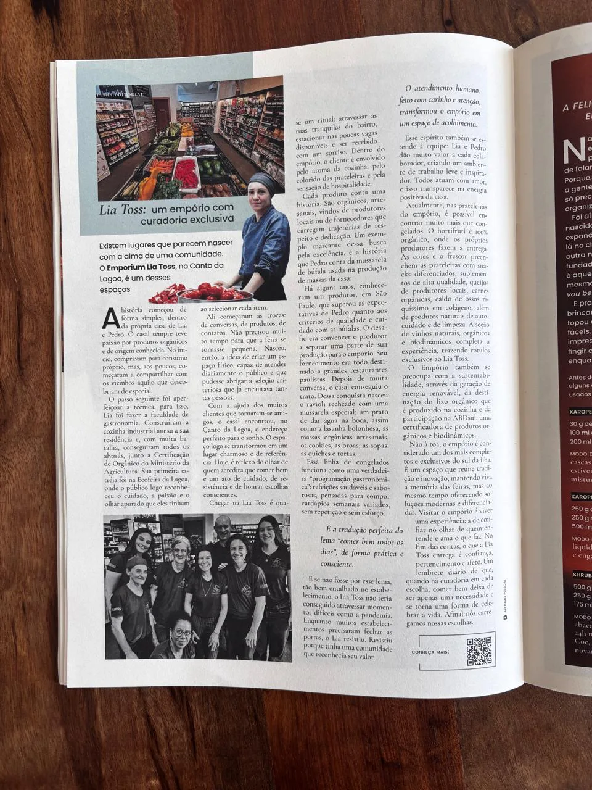

A Lia Toss foi tema de uma matéria na Revista Offline, um jornal cultural gratuito de Florianópolis, distribuído em vários pontos da cidade. A reportagem, intitulada "Lia Toss: um empório com curadoria exclusiva", contou a trajetória da família e o que torna a loja um espaço de referência na Porto da Lagoa.

A matéria, na íntegra
Existem lugares que parecem nascer com a alma de uma comunidade. O Emporium Lia Toss, no Canto da Lagoa, é um desses espaços.
A história começou de forma simples, dentro da própria casa de Lia e Pedro. O casal sempre teve paixão por produtos orgânicos e de origem conhecida. No início, compravam para consumo próprio, mas, aos poucos, começaram a compartilhar com os vizinhos aquilo que descobriam de especial.
O passo seguinte foi aperfeiçoar a técnica; para isso, Lia foi fazer a faculdade de gastronomia. Construíram a cozinha industrial anexa à sua residência e, com muita batalha, conseguiram todos os alvarás, junto à Certificação de Orgânico do Ministério da Agricultura. Sua primeira feira foi a Ecofeira da Lagoa, onde o público logo reconheceu o cuidado, a paixão e o olhar apurado que eles tinham ao selecionar cada item.
Ali começaram as trocas: de conversas, de produtos, de contatos. Não precisou muito tempo para que a feira se tornasse pequena. Nasceu, então, a ideia de criar um espaço físico, capaz de atender diariamente o público e que pudesse abrigar a seleção criteriosa que já encantava tantas pessoas.
Com a ajuda dos muitos clientes que tornaram-se amigos, o casal encontrou, no Canto da Lagoa, o endereço perfeito para o sonho. O espaço logo se transformou em um lugar charmoso e de referência. Hoje, é reflexo do olhar de quem acredita que comer bem é um ato de cuidado, de resistência e de honrar escolhas conscientes.
Chegar na Lia Toss é quase um ritual: atravessar as ruas tranquilas do bairro, estacionar nas poucas vagas disponíveis e ser recebido com um sorriso. Dentro do empório, o cliente é envolvido pelo aroma da cozinha, pelo colorido das prateleiras e pela sensação de hospitalidade.
Cada produto conta uma história. São orgânicos, artesanais, vindos de produtores locais ou de fornecedores que carregam trajetórias de respeito e dedicação. Um exemplo marcante dessa busca pela excelência é a história que Pedro conta da mussarela de búfala usada na produção de massas da casa.
Há alguns anos, conheceram um produtor, em São Paulo, que superou as expectativas de Pedro quanto aos critérios de qualidade e cuidado com as búfalas. O desafio era convencer o produtor a separar uma parte de sua produção para o empório — seu fornecimento era todo destinado a grandes restaurantes paulistas. Depois de muita conversa, o casal conseguiu o trato. Dessa conquista nasceu o ravioli recheado com uma mussarela especial; um prato de dar água na boca, assim como a lasanha bolonhesa, as massas orgânicas artesanais, os cookies, as broas, as sopas, as quiches e as tortas.
Essa linha de congelados funciona como uma verdadeira "programação gastronômica": refeições saudáveis e saborosas, pensadas para compor cardápios semanais variados, sem repetição e sem esforço.
É a tradução perfeita do lema "comer bem todos os dias", de forma prática e consciente.
E se não fosse por esse lema, tão bem entalhado no estabelecimento, o Lia Toss não teria conseguido atravessar momentos tão difíceis como a pandemia. Enquanto muitos estabelecimentos precisaram fechar as portas, o Lia resistiu. Resistiu porque tinha uma comunidade que reconhecia seu valor.
O atendimento humano, feito com carinho e atenção, transformou o empório em um espaço de acolhimento. Esse espírito também se estende à equipe: Lia e Pedro dão muito valor a cada colaborador, criando um ambiente de trabalho leve e inspirador. Todos atuam com amor, e isso transparece na energia positiva da casa.
Atualmente, nas prateleiras do empório, é possível encontrar muito mais que congelados. O hortifruti é 100% orgânico, com entrega feita pelos próprios produtores. As cores e o frescor preenchem as prateleiras com snacks diferenciados, suplementos de alta qualidade, queijos de produtores locais, carnes orgânicas, caldo de ossos riquíssimo em colágeno, além de produtos naturais de autocuidado e de limpeza. A seção de vinhos naturais, orgânicos e biodinâmicos completa a experiência, trazendo rótulos exclusivos ao Lia Toss.
O Emporium também se preocupa com a sustentabilidade, através da geração de energia renovável, da destinação responsável do lixo orgânico produzido na cozinha e da participação na ABDSul, uma certificadora de produtos orgânicos e biodinâmicos.
Não à toa, o empório é considerado um dos mais completos e exclusivos do sul da ilha. É um espaço que reúne tradição e inovação, mantendo viva a memória das feiras, mas ao mesmo tempo oferecendo soluções modernas e diferenciadas. Visitar o empório é viver uma experiência: a de confiar no olhar de quem entende e ama o que faz. No fim das contas, o que a Lia Toss entrega é confiança, pertencimento e afeto. Um lembrete diário de que, quando há curadoria em cada escolha, comer bem deixa de ser apenas uma necessidade e se torna uma forma de celebrar a vida. Afinal, nós carregamos nossas escolhas.